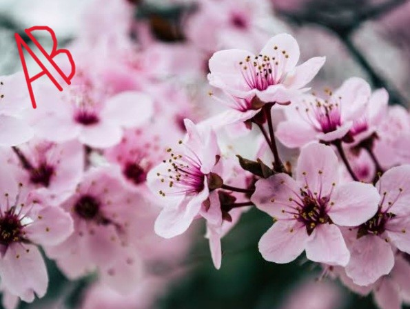
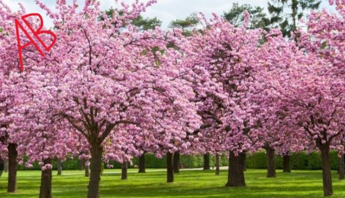
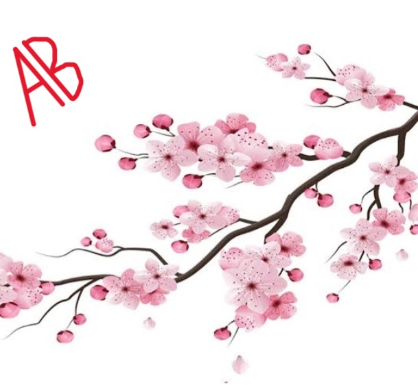

A cherry blossom also known as Japanese cherry or sakura,is a flower of trees in the genus Prunus or the Prunus
subgenus Cerasus.Wild species of the cherry tree are widely distrubuted,mainly in the Northern Hemisphere.They
are common in East Asia,specially in Japan.Cherry Blossom trees bring billowy pink and white blooms in the spring
These blooms often dont last more than two weeks and are also a symbol of renewal and epemeral nature of life.


